mosquitto-ui Handbook
mosquitto-ui is a web interface for the MQTT broker Eclipse Mosquitto 2.1. Manage devices and permissions, watch live what passes through the broker, and set up bridges, certificates, backups and notifications, all without touching a config file by hand.
Overview
What the UI does
Access
Clients, groups and roles of Dynamic Security, an access checker, login with access tokens (JWT).
Live view
Topic tree with values and charts, the sessions of every client, traces of single clients, the broker log.
Broker
Options and listeners, checked before they are applied, message rules, bridges with Victron GX pairing.
TLS
Certificates via ACME (Let's Encrypt, ZeroSSL, Google) with DNS challenge, automatic renewal and a TLS listener.
Safe operation
Encrypted backups to SFTP, FTP, S3, a directory or mail; mails on outages and suspicious log lines; an audit log of all changes.
Migration
Import of an existing password_file, acl_file, mosquitto.conf and mosquitto.db.
How it is built
Two parts run side by side, as Docker containers or as systemd services:
- The broker is Mosquitto 2.1 with Dynamic Security (users and permissions) and two plugins from mosquitto-ui: inspect (sessions, traces, message rules) and token-auth (login with JWT).
- The agent starts Mosquitto and does what the UI asks for: check a new configuration with
mosquitto --test-config, apply it, reload or restart, install certificates. If the broker rejects a configuration, the old one stays in effect. This way the UI needs neither the Docker socket nor root. - The UI talks to the broker over MQTT (as user
adminvia$CONTROLand$SYS) and to the agent through files in the shared directory. Its own data (settings, encrypted secrets, history) lives in the state directory.
Installation
Requirements
- A Linux server (amd64 or arm64), with Docker and Docker Compose, or with systemd for the install without Docker.
- 512 MB of RAM for the UI. The broker needs little.
- Open ports:
1883(MQTT),8883(MQTT over TLS, once there is a certificate),8080for the UI, or better only the reverse proxy on443. - For login, nothing else (UI users with a password). If you like, add an identity provider: Keycloak, authentik and others with OpenID Connect, or accounts at Google, Microsoft, GitHub and the like.
- For a certificate: a domain and a DNS provider with an API (acme-dns or PowerDNS).
With Docker Compose
A server needs only two files from the repository: deploy/compose.yaml and deploy/env.example.
Create a directory and fetch the files:
sudo mkdir -p /opt/mosquitto && cd /opt/mosquitto # copy compose.yaml and env.example from deploy/ to here cp env.example .env chmod 600 .envFill in
.env. The essentials:Variable Meaning MOSQUITTO_PASSWORDPassword of the broker user admin, at least 12 characters (openssl rand -base64 24). Read only on the very first start. With a shorter one, the broker starts without users and rejects everyone.MOSQUITTO_UI_AUTHleave as it is. localkeeps the local login on at all times, as the emergency access (see Login).OIDC_ISSUER,OIDC_CLIENT_ID,OIDC_CLIENT_SECRETonly from installations before 0.26: they become a provider at the first start. New installations leave them empty. MOSQUITTO_UI_SECRET_KEYEncrypts secrets and signs backups ( openssl rand -base64 32). Keep a copy away from the server.MOSQUITTO_UI_VERSIONVersion of both images. A fixed version is better than latest.Start:
docker compose up -d docker compose logs -f mosquitto-uiThe first password of
adminis in:docker compose exec mosquitto-ui cat /var/lib/mosquitto-ui/initial-password
The data lives in four volumes: data (users, permissions, retained messages, certificates), state
(settings of the UI), shared (configuration the UI writes for the broker) and backups (local backup targets).
The UI runs read-only, without privileges, as its own user.
Without Docker (systemd)
Every release comes with mosquitto-ui-<version>.tar.gz. Its script installs two systemd services and builds
Mosquitto 2.1.2 from source, because most distributions still ship 2.0. Tested with Debian 12 and 13 and Rocky Linux 9;
Ubuntu and Fedora work the same way.
V=0.26.0
curl -fLO https://github.com/alexsxb/mosquitto-ui/releases/download/v$V/mosquitto-ui-$V.tar.gz
curl -fLO https://github.com/alexsxb/mosquitto-ui/releases/download/v$V/mosquitto-ui-$V.tar.gz.sha256
sha256sum -c mosquitto-ui-$V.tar.gz.sha256
tar xzf mosquitto-ui-$V.tar.gz && cd mosquitto-ui-$V
sudo ./install.shThe first run takes one to two minutes. At the end it tells you where the UI runs and where the first password is:
==> mosquitto-ui 0.26.0 runs on http://mqtt01:8080
MQTT: port 1883, broker user admin, password in /etc/mosquitto-ui/broker.env (MOSQUITTO_DYNSEC_PASSWORD)
Login: see /var/lib/mosquitto-ui/state/initial-password (goes away after the first login)| Service | What | Runs as |
|---|---|---|
mosquitto-ui-broker | Agent and Mosquitto, log with journalctl -u mosquitto-ui-broker | agent root, Mosquitto mosquitto |
mosquitto-ui | the UI, hardened unit (only its three data directories are writable) | mosquitto-ui |
Options of install.sh: --port (UI, default 8080), --no-start,
--skip-packages. Settings then live in /etc/mosquitto-ui/mosquitto-ui.env; after a change, run
sudo systemctl restart mosquitto-ui. A Mosquitto package from the distribution must not run on 1883 at the same time:
sudo systemctl disable --now mosquitto.
Important: Keep MOSQUITTO_UI_SECRET_KEY from /etc/mosquitto-ui/mosquitto-ui.env in a
safe place. Without it, a new server cannot read encrypted settings, local users or the backup signatures.
All paths, updating and removal: Paths, Updates and docs/standalone.md.
Login
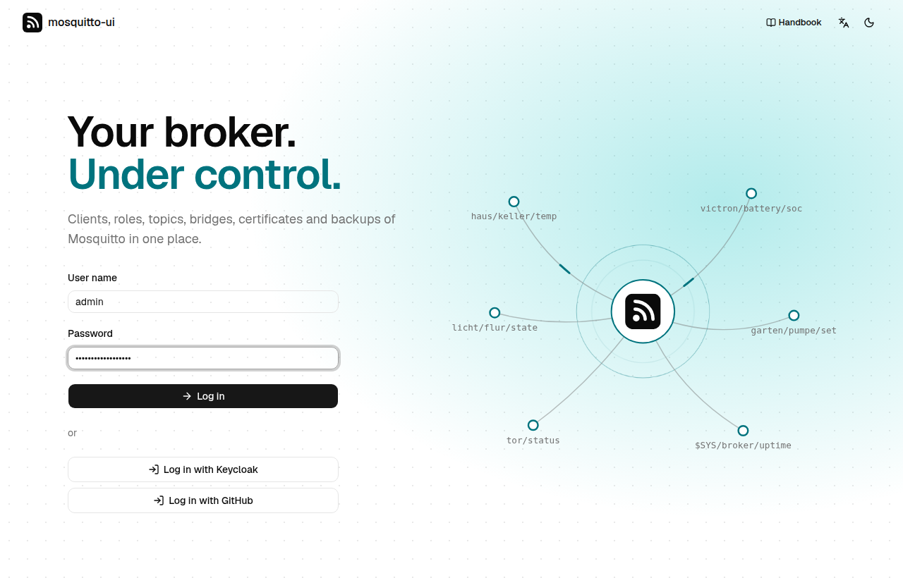
There are two ways in, both set up on the page Login: UI users with a password (the local login) and any number of identity providers.
The first start
- As long as no provider is on, the local login applies. The first start creates
admin, withMOSQUITTO_UI_LOCAL_AUTH_INITIAL_PASSWORDor a generated password ininitial-passwordin the state directory. The file goes away after the first login. - Add more users on the page UI users. Every user may do everything.
- Passwords need at least 12 characters and are stored as PBKDF2-SHA256 with 600,000 iterations. After 5 failed attempts in 15 minutes for one name or from one address, every further attempt has to wait.
- A session ends after 8 hours without a request, at the latest 7 days after login, and at once when the password changes.
Identity providers
Under Login → Add provider there are templates for Keycloak, authentik, Authelia, ZITADEL, Pocket ID, Kanidm, Google, Microsoft Entra ID, Apple, GitHub, GitLab, Gitea/Forgejo, Okta, Auth0, Amazon Cognito and any other provider with OpenID Connect. At the provider, you always create a confidential client with the authorization code flow. With Keycloak as the example:
- Clients → Create client, OpenID Connect, client ID e.g.
mosquitto-ui. - Client authentication on (confidential client), Standard flow on.
- Valid redirect URIs: the callback address the dialog shows,
https://<host of the UI>/auth/sso/keycloak(orhttps://<host of the UI>/*). Valid post logout redirect URIs:https://<host of the UI>/*. - Create a role or group for the admins, e.g.
mosquitto-admin, and enter it in the dialog under Who may come in?. - Copy the address of the realm, the client ID and the secret from Credentials into the dialog. Check with Test.
Once a provider is on, you can turn the local login off. If you locked yourself out, set MOSQUITTO_UI_AUTH=local
and restart the UI: the local login applies again, whatever the page says. Forgot the password: stop the UI,
delete users.json in the state directory, start it with MOSQUITTO_UI_AUTH=local: admin is created anew.
From versions before 0.26
If you had set QUARKUS_OIDC_* (or OIDC_* in .env), the first start of 0.26 shows
the same provider on the page Login, with the role from MOSQUITTO_UI_ADMIN_ROLE. The local login stays off. The callback
address /auth/sso/keycloak is new: with https://<host>/* as Valid redirect URI, it already fits.
For Keycloak there is a login theme in the style of the UI under docker/keycloak-theme/mosquitto-ui. Select it for this client only
(Login settings → Login theme).
HTTPS and reverse proxy
The UI only speaks HTTP. Put a proxy with TLS in front of it. It needs to pass X-Forwarded-* for the login redirects
and must not buffer responses for the live pages (Topics, Logs: server-sent events).
Caddy
mqtt-ui.example.com {
reverse_proxy 127.0.0.1:8080
}nginx
location / {
proxy_pass http://127.0.0.1:8080;
proxy_set_header Host $host;
proxy_set_header X-Forwarded-For $proxy_add_x_forwarded_for;
proxy_set_header X-Forwarded-Proto $scheme;
proxy_buffering off;
proxy_read_timeout 1h;
}Then tell the UI which proxies to trust: in the Docker setup, TRUSTED_PROXIES in .env; without Docker, uncomment the
QUARKUS_HTTP_PROXY_* lines in mosquitto-ui.env. To make the UI reachable only through the proxy: QUARKUS_HTTP_HOST=127.0.0.1.
MQTT through a proxy: If e.g. Traefik forwards MQTT over TCP to the broker, the broker only sees the proxy's address. For this, the Configuration page offers Listener for a proxy with the PROXY protocol. The normal port 1883 stays without it.
First steps
- Log in, change the password under UI users or create your own users, and if you have one, set up the identity provider under Login.
- Back up the secret key (see above).
- Create roles and clients: first a role with the topics one kind of device needs, then one client with a password per device, see Concepts. Verify with the access check.
- Turn on the log: under Configuration, pick a log level other than “Off”.
- Order a certificate. The UI then sets up the TLS listener on 8883 (Certificate).
- Create a backup job and run it once by hand (Backups).
- Notifications: enter a mail server and recipients, send a test mail.
Concepts
Clients, groups, roles
Mosquitto's Dynamic Security plugin manages users and permissions. The UI presents it like this:
| Term | What |
|---|---|
| Client | A login at the broker: user name and password. A device can connect with any client ID; several connections with the same login are possible. |
| Role | A list of rules (ACLs): which topics may be published, received, subscribed to. |
| Group | Several clients with the same roles, e.g. all Shellys. |
| Default access | What applies when no rule matches. Out of the box: publish and subscribe denied, receive and unsubscribe allowed. |
Rule types of a role: publishClientSend (the client may send), publishClientReceive (the client gets messages),
subscribeLiteral/subscribePattern (subscribe, exact or with +/#), unsubscribe….
In topics, %c stands for the client ID and %u for the user name.
Wildcard subscriptions: Mosquitto 2.1 rejects subscriptions with + or # unless the role
has “Allow wildcard subscriptions”. The client only gets “subscription denied”. The UI turns it on for new roles.
The user admin is there for the UI. It may use $CONTROL and $SYS, but cannot
send messages on normal topics. Devices get their own clients. The UI locks admin and everything it needs against
changes, so it cannot lock itself out.
How the broker decides
- First the client's roles, then the roles of its groups, each by priority (highest first).
- Within a role, an exact rule comes before patterns, whatever the priority.
- The first matching rule decides. If none matches, the default access applies.
The access check on the Rules page works out exactly this and names the rule that decides.
Where the configuration lives
mosquitto.confis yours (fixed in the image; without Docker/etc/mosquitto-ui/mosquitto.conf). It loads the plugins and, at the end, the UI's files viainclude_dir.conf.d/mosquitto-ui.confis written by the UI: the options and listeners of the Configuration page.conf.d/mosquitto-ui-bridges.conf: the bridges. They are kept separate because Mosquitto has to read their passwords in plain text.- The agent checks every change before applying it. Some options only take effect after a restart, which briefly disconnects all clients. The UI tells you beforehand whether it will reload or restart.
The pages
On the left, the navigation in three groups: Overview for watching, Access for permissions, Broker for settings. Top right: language (German, English, French) and light/dark. Bottom left: the user menu with the handbook and Log out.
Dashboard
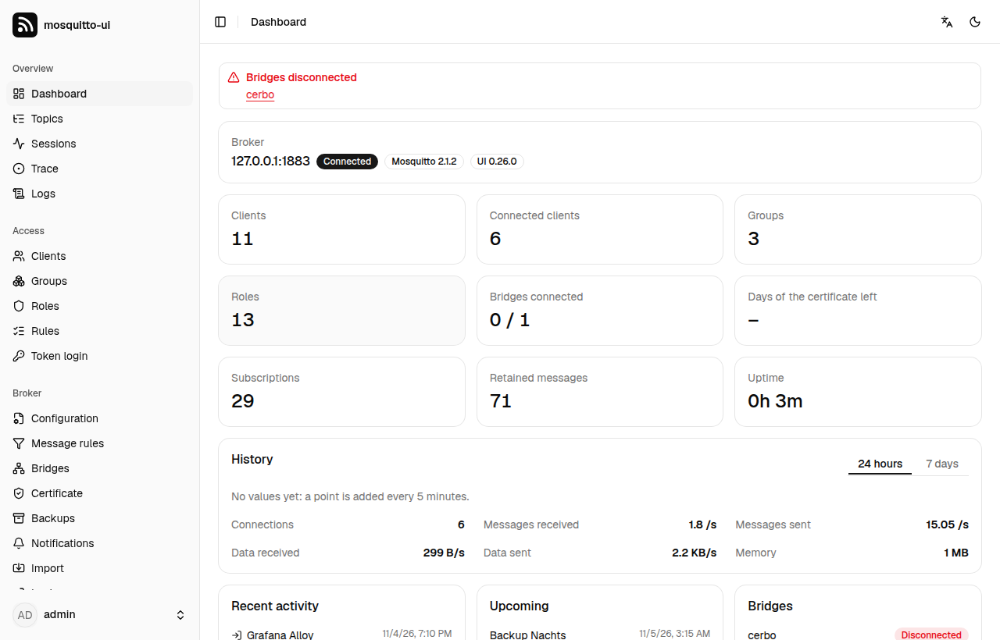
- Warnings at the top: disconnected bridges, clients that are usually connected but missing, failed or overdue backups, an expiring certificate.
- Key figures from
$SYS: connected clients, subscriptions, retained messages, uptime. The tiles lead to the matching page. - History over 24 hours or 7 days (connections, messages, data, memory), one point every 5 minutes.
Topics
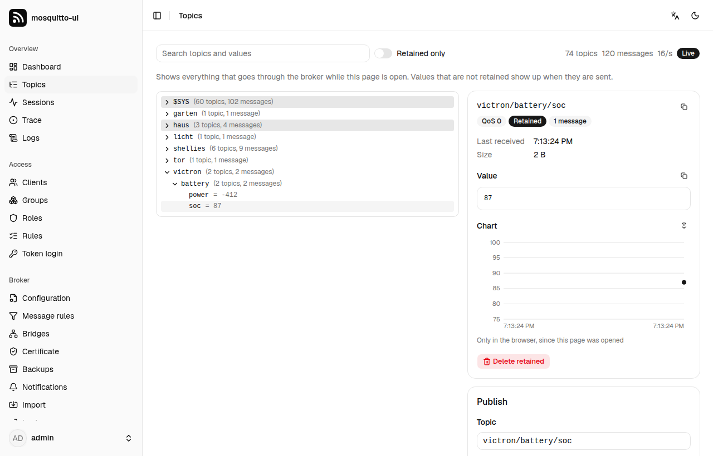
- Everything that passes through the broker, as a tree with the latest value, while the page is open. Search across topics and values, filter Retained only.
- On the right: formatted JSON, QoS, retained, the values since the page was opened, a chart (numbers, also numbers inside JSON; pinning keeps it in the browser).
- Publish to a topic, with QoS and retain. This also reaches bridges, e.g.
W/…of a Victron GX. - Delete retained for a topic and everything below it, after a confirmation that shows the count.
- For all this, the UI temporarily creates the broker user
mosquitto-ui-monitorand removes it one minute after the last viewer leaves.
Sessions
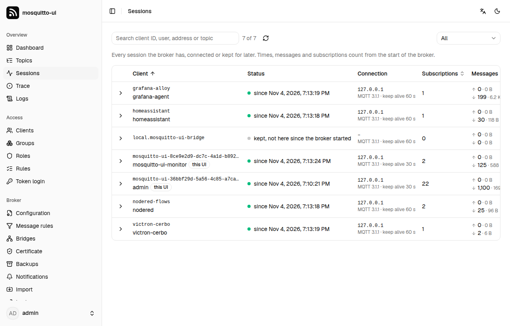
Every session the broker holds, connected or kept for later (persistent sessions): client ID, user, address, keepalive, subscriptions with QoS, sent and received messages with time. Expand a row to see its subscriptions. The buttons on the right start a trace or open the log of that client. Counts start when the broker starts.
Trace
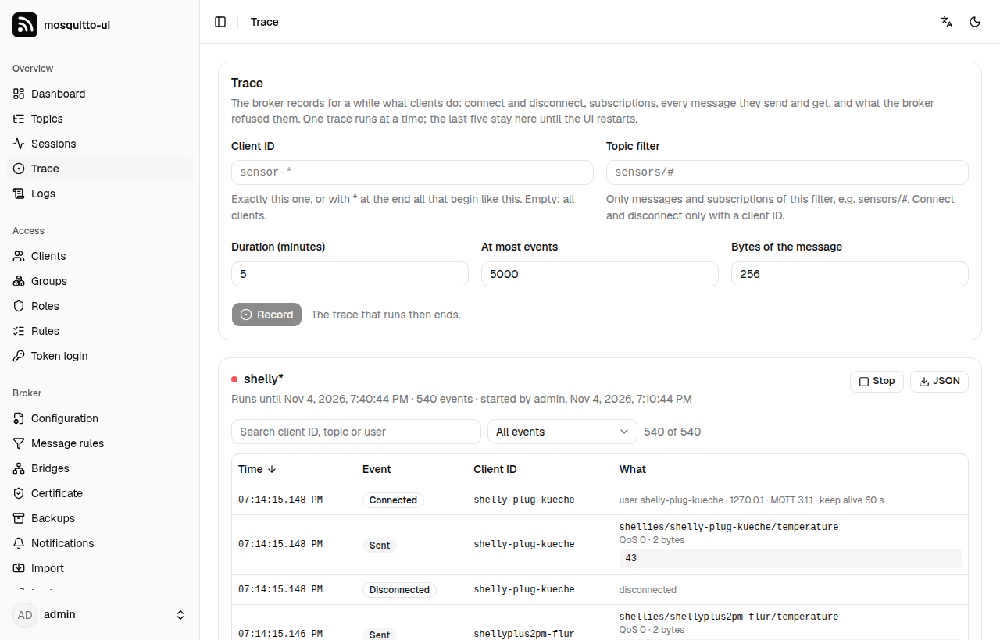
shelly.- Records for up to one hour what clients do: connect and disconnect with the reason, subscriptions, every message sent and delivered (the first bytes), and what the broker refused.
- For one client ID, all with a prefix (
sensor-*), a topic filter, or both. One trace at a time, at most 50,000 events. - Download as JSON, payloads as text or base64. The last five stay until the UI restarts.
Typical use: A device sends no values. Start a trace on its client ID and restart the device. You see whether it connects, what it subscribes to and whether the broker refuses anything.
Logs
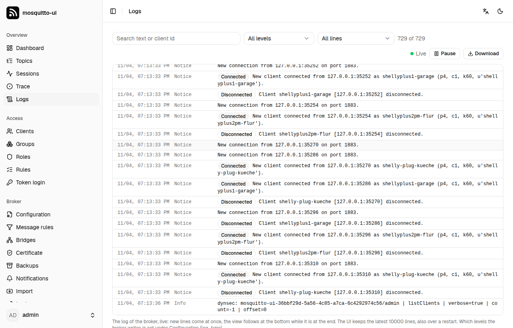
- The broker log live, like
tail -f. Scrolling up stops following; Pause freezes the view. - Search, a choice of Levels with a count per level, filters (errors and refusals, connections, subscriptions, bridges), download.
- Levels the broker does not write according to
log_typeare greyed out. If the log level is “Off”, the page shows a warning. - From Clients and Sessions, the log button opens only the lines of one client.
- The UI keeps 10,000 lines, also across a restart. Mosquitto never hands out debug lines; they only appear in
docker logsor the journal.
Clients
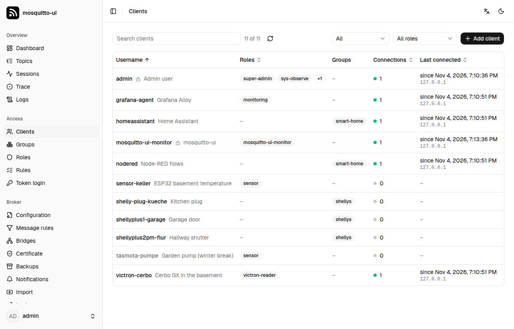
- Create with password, roles and groups; switch between enabled and disabled (disabled: cannot log in).
- Per row: edit, change password, Disconnect (all connections of this login; most devices come straight back), log, delete.
- The UI tracks Last connected with the address itself; it checks every 15 seconds.
- Below, a separate table for clients that came with an access token.
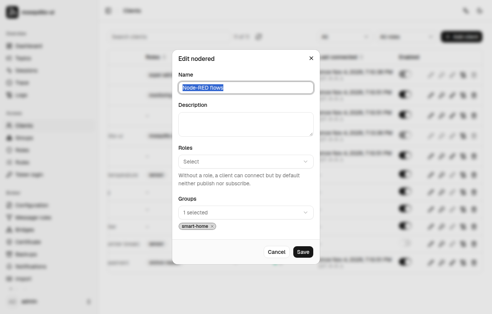
Groups and Roles
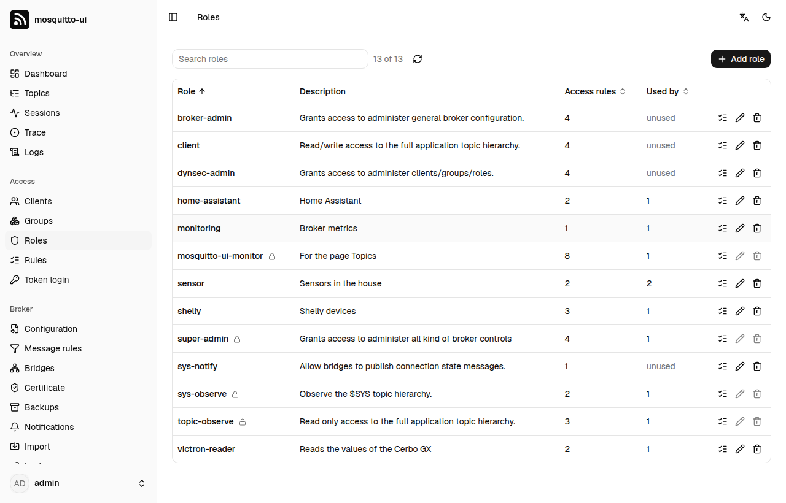
- Roles: add rules (type, topic, priority, allow/deny), allow wildcard subscriptions.
- Groups: roles and members. The group for anonymous clients is marked.
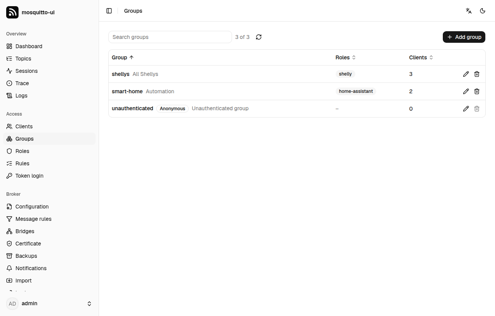
Rules
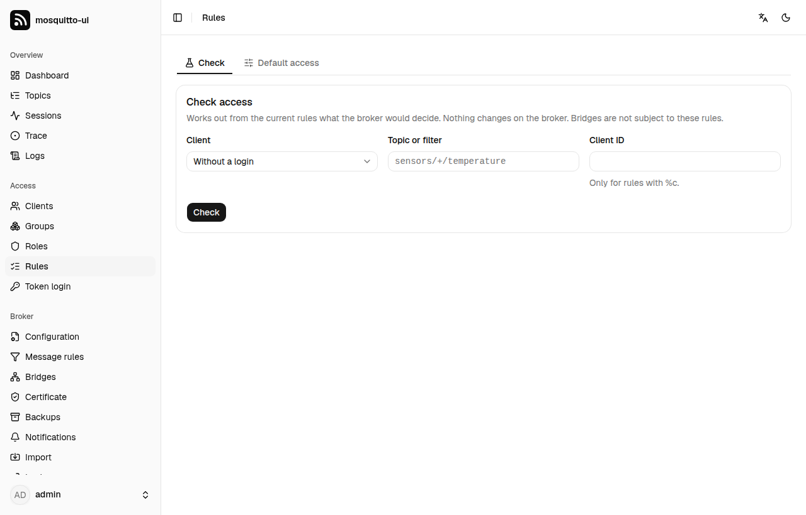
- Check access: enter a client and a topic. For publish, receive, subscribe and unsubscribe, the page tells you whether it is allowed and which rule decides.
- Default access for everything no rule matches. A change applies to everyone at once.
- Clients without a login: they get the roles of this group, only with
allow_anonymous true.
Token login
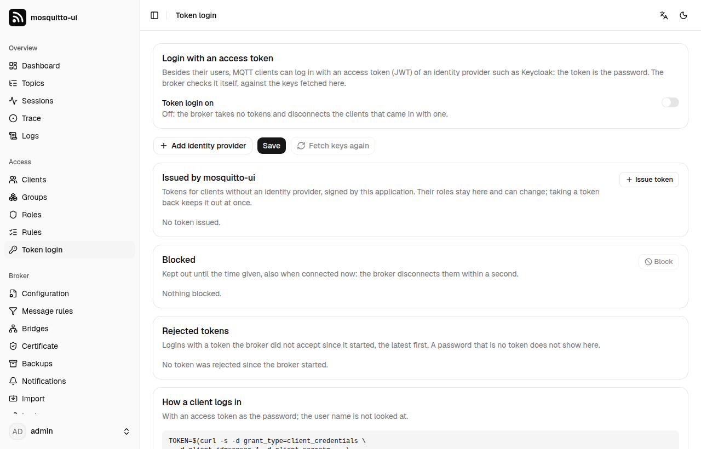
- Clients log in with an access token (JWT) as the password, e.g. from Keycloak. The broker itself checks signature, issuer, audience and expiry.
- Per identity provider: issuer, audience, the claims for user name and groups, which groups get which roles, Bind client id to the user name.
- Issued by mosquitto-ui: tokens for devices without an identity provider, with roles you can change later. Revoking takes effect at once.
- Blocked: keep a user, a subject or a single token out until a given time. Rejected tokens are listed with the reason.
- In detail with Keycloak:
docs/token-login-keycloak.md.
Configuration
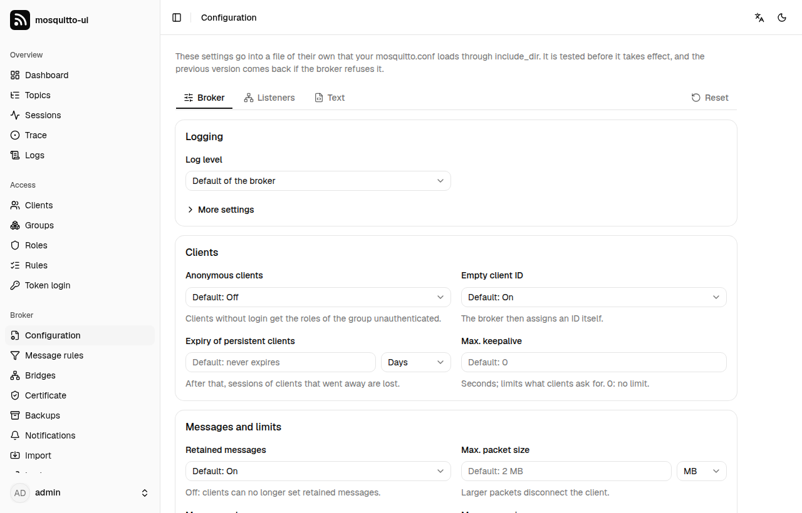
- Broker: logging (
log_type; “Off” turns off the whole log), clients (anonymous, persistent sessions, keepalive), messages and limits,$SYS. - Listeners: more ports, TLS with the UI's certificate, websockets, PROXY protocol.
- Text: edit the UI's file directly.
- Before applying, the UI shows what changes and whether the broker reloads (clients stay connected) or restarts (everyone is briefly disconnected).
- Reset: selected parts back to the state of a fresh install, after typing
RESET.
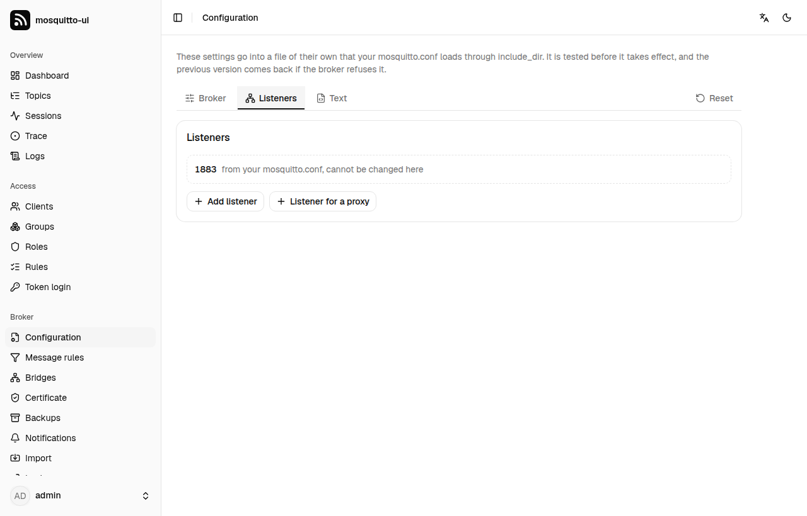
mosquitto.conf and those of the UI.Message rules
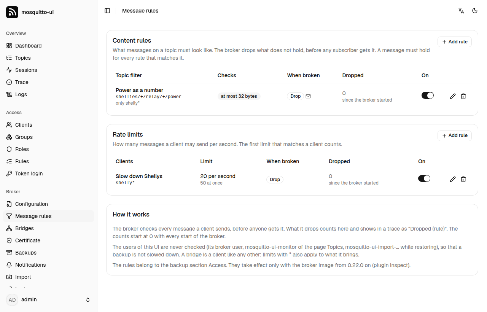
- Content rules: what messages on a topic must be: valid JSON, a maximum size, required fields with a type.
- Rate limits: how many messages a client may send (Per second and At once).
- The broker drops what does not fit before anyone gets it. Optionally it disconnects the client, or the UI sends a mail.
Bridges and Victron
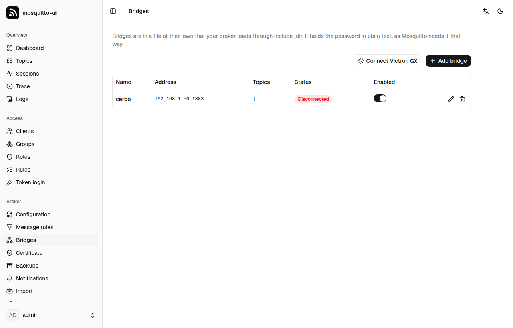
- Connections to other brokers, with topics per direction (
in,out,both), prefixes, state and warnings about loops. - Connect Victron GX sets up a bridge in one step, read-only or both ways. With Venus OS 3.80 or later it uses pairing (Settings → Integrations → MQTT Devices, 120 seconds).
- The UI keeps the GX awake (keepalive every 30 seconds). If the UI is not running, values stop after one minute.
- Turning a bridge off keeps it in the file, without a restart.
Certificate
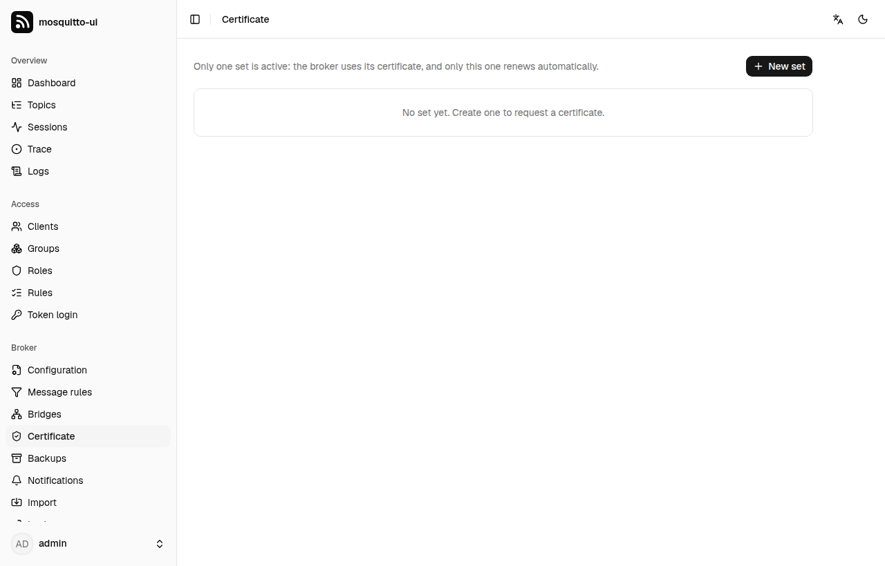
- Ordered via ACME with DNS challenge through acme-dns or the PowerDNS API. CAs: Let's Encrypt (try staging first!), ZeroSSL, Google Trust Services, any other by URL.
- Certificates come in sets (e.g. staging and production). One is active and renews itself in the last third of its lifetime.
- Set up the TLS listener automatically creates the listener on 8883 with the first certificate (one restart). Renewals come with a reload; clients stay connected.
- Only the broker gets the private key; the UI cannot read it back.
Backups
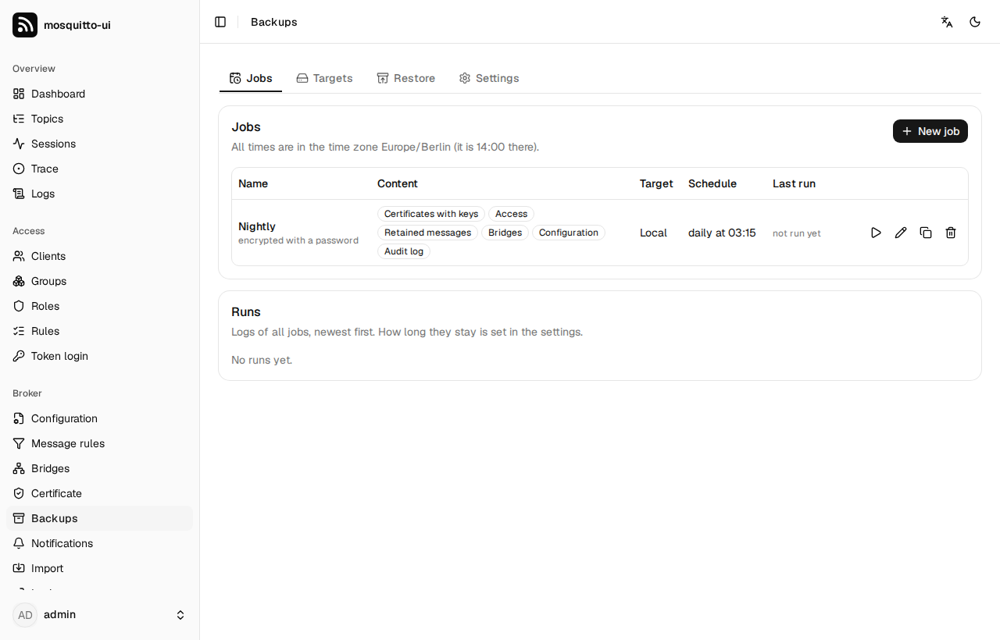
- Targets: SFTP, FTP/FTPS, S3, a directory, e-mail. Jobs: what, where, when (daily, weekly, monthly, by hand), encrypted with a password or GPG.
- Parts: access, configuration, bridges, certificates, retained messages, audit log, backup settings.
- Restore from a target or an uploaded file. It replaces the selected parts and restarts the broker. Archives are signed with the secret key.
- Encrypted backups can be opened without the UI too:
openssl enc -d -aes-256-cbc -pbkdf2 -iter 600000 -md sha256 -in FILE.zip.enc -out FILE.zip.
Notifications
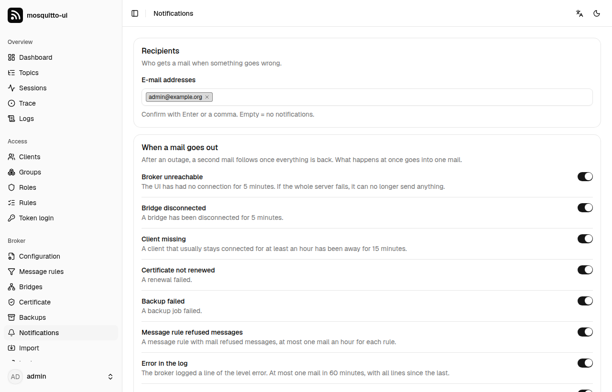
| When | |
|---|---|
| Broker unreachable | the UI has had no connection for 5 minutes |
| Bridge disconnected | a bridge has been disconnected for 5 minutes |
| Client missing | a client that is usually connected for long has been gone for 15 minutes; exceptions by name |
| Certificate not renewed, Backup failed | a renewal or a backup failed |
| Message rule refused messages | a rule with mail dropped messages; at most once an hour |
| Error in the log | the broker wrote a line of level Error; at most one mail an hour |
| Many rejected logins | 10 in 10 minutes, with client IDs and addresses |
After an outage, a second mail follows once everything works again. If the whole server goes down, the UI cannot send anything. For that case,
check /q/health from outside.
Import
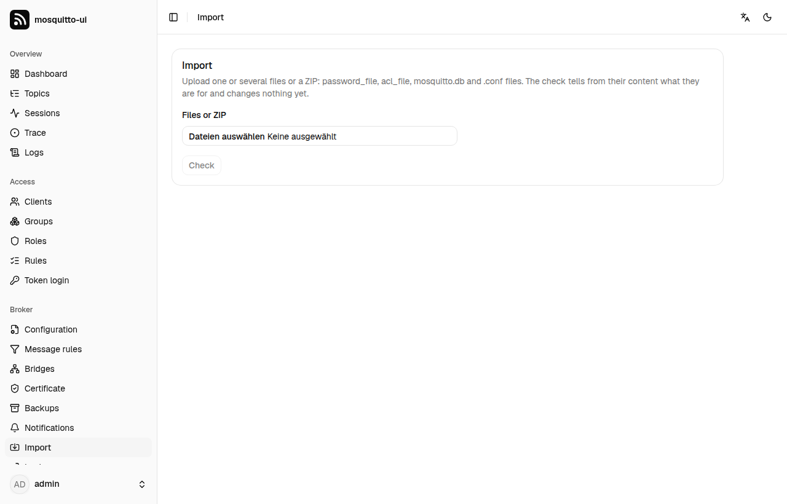
- For migration:
password_file,acl_file,mosquitto.conf/conf.d,mosquitto.db, one by one or as a ZIP. - The check recognizes each file by its content and shows a preview without changing anything. Then pick the parts.
- Password hashes are taken over, so devices keep their passwords. Every user gets a role
imported-<user>.
Login
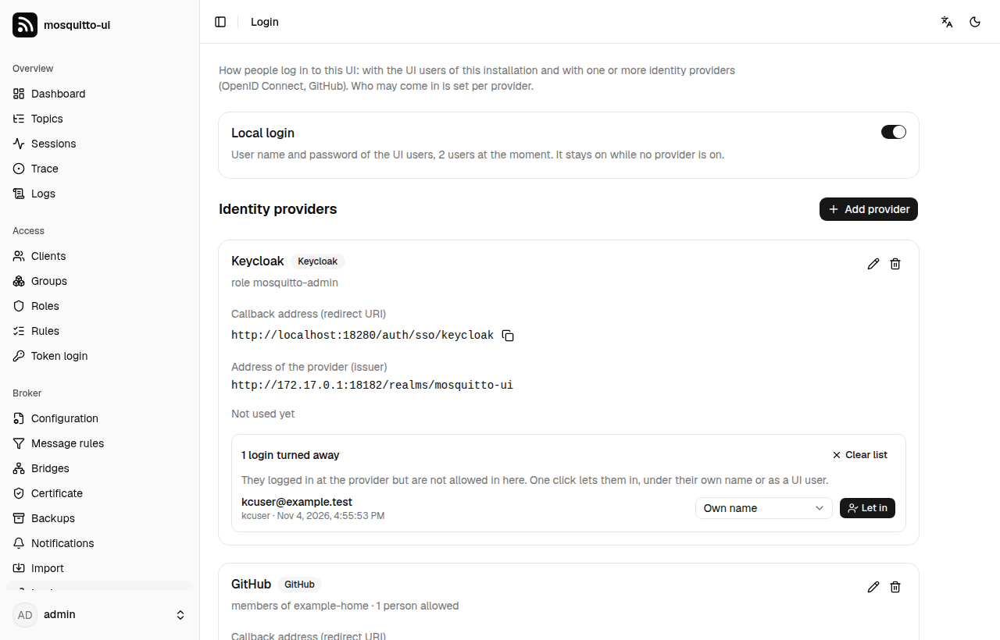
- Local login: on or off. It can only go off once a provider is on, and the last provider can only go off once the local login is on. So there is always a way in.
- Each provider shows its callback address to copy, the address of the provider, who may come in and when it was last used.
- Logins turned away: people who logged in at the provider but fit no rule, with the roles from the token. Let in lets the person in with one click, under their own name or as one of the UI users.
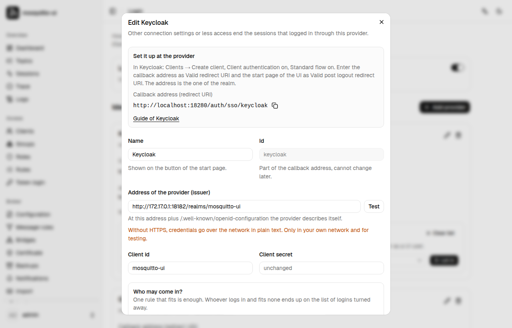
Who may come in? One rule that fits is enough:
- Everyone who can log in at this provider: when the provider itself decides who may use the client. Not with Google, GitHub or Apple, where everyone has an account.
- Roles or groups from the token, e.g.
mosquitto-admin. The template knows where they are in the token; you can change it under Advanced. - Organisations and teams on GitHub:
orgororg/team. - People allowed: an e-mail address,
*@example.orgfor a whole domain, or a user name. Only verified e-mail addresses count. With a UI user next to it, the login counts as that user.
If the connection settings of a provider change, or fewer people may come in, its sessions end; a new name or more people allowed
leave them as they are. Log out also logs out at the provider, if it supports that. Details: docs/en/login.md.
UI users
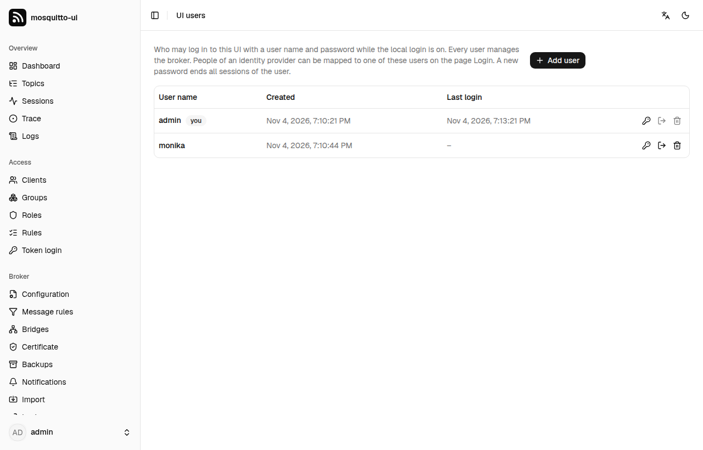
Who may log in to the UI with a password: create users, set a password (this ends the user's sessions), end sessions, delete. You cannot delete yourself or the last user. Even with the local login off, you can map people from a provider to them on the page Login. These users have nothing to do with the MQTT clients.
Audit log
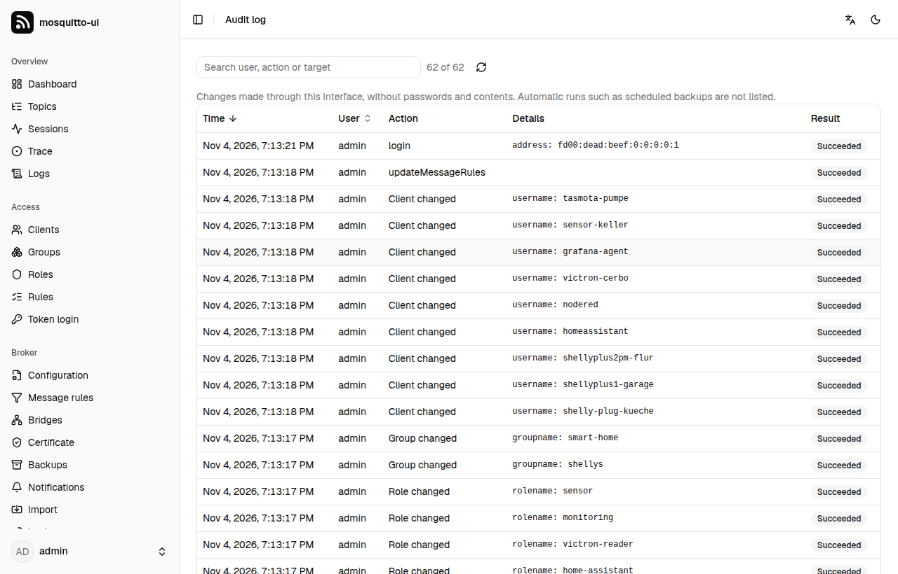
Every change made through the UI, with user, time and result, plus logins (with the provider), logins turned away and failed attempts of the local login. Passwords, keys and message payloads never appear in it. It keeps the last 20,000 entries and is a separate part in backups.
On a phone
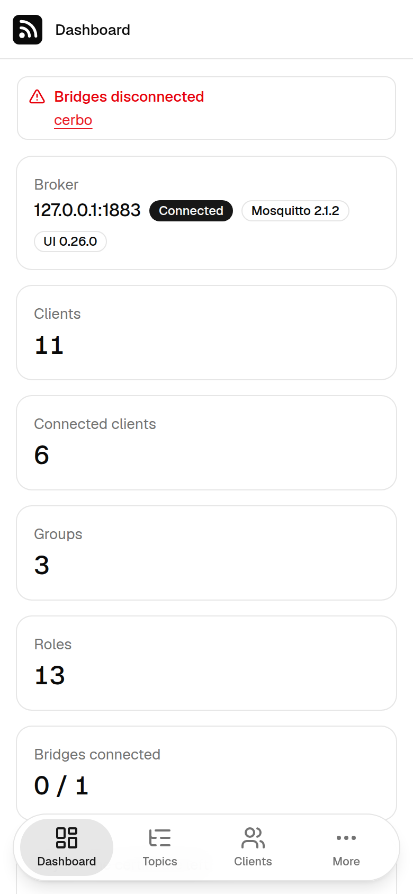
On a phone, a bar at the bottom leads to the main pages, and More to the rest, to language, appearance and the handbook. Over HTTPS you can add the UI to the home screen as an app.
Operation
Updates
| Setup | Update |
|---|---|
| Docker | Set MOSQUITTO_UI_VERSION in .env, then docker compose pull && docker compose up -d. A new broker image restarts the broker. |
| without Docker | Unpack the new tarball, run sudo ./install.sh. The broker only restarts if Mosquitto, the plugins or the agent changed. To go back, install the old tarball the same way. |
The UI and the broker image belong together and have the same version.
Backup and migration
- A backup job with all parts covers users, permissions, configuration, bridges, certificates and retained messages.
- Keep the secret key as well. UI users and identity providers belong to the part Access. A restore adds missing UI users, and whether the local login is on stays as it is on the new server.
- Migration, also from Docker to systemd: create a backup, install fresh (without Docker, use
--no-start), enter the sameMOSQUITTO_UI_SECRET_KEY, start, then restore the backup on the Backups page.
Troubleshooting
| What you see | The cause |
|---|---|
Device does not connect, log shows disconnected: not authorised | Wrong password, client disabled or unknown. Mosquitto 2.1 writes the same line for all three. |
| Device connects but gets nothing | Subscription refused: a rule is missing or the role does not allow wildcard subscriptions. The access check and a trace show it. |
| Logs page stays empty | Log level “Off” under Configuration, or log_dest topic is missing from your own mosquitto.conf. |
| “No connection to the broker” | The broker is not running, or MOSQUITTO_PASSWORD no longer matches the user admin. |
| After logging in at the provider, back on the start page with “The provider cannot be reached or refused the login” | The provider does not answer the UI or refuses it. The UI log has Login at /auth/sso/… failed with the reason; on the Login page, Test the address. An error at the provider itself: usually the callback address. |
| No broker user after the first start | Password shorter than 12 characters. Empty the data volume and start again with a longer password. |
| Login redirects in a loop | The proxy does not set X-Forwarded-Proto or is not configured as trusted. |
| Topics or Logs are not live | The proxy buffers: for nginx, proxy_buffering off. |
| Without Docker: port 1883 in use | The distribution's Mosquitto is running: sudo systemctl disable --now mosquitto. |
Logs: docker compose logs mosquitto mosquitto-ui or journalctl -u mosquitto-ui-broker -u mosquitto-ui.
Reference
Environment variables
| Variable | Meaning | Default |
|---|---|---|
MOSQUITTO_HOST, MOSQUITTO_PORT | broker | localhost, 1883 |
MOSQUITTO_USERNAME, MOSQUITTO_PASSWORD | the UI's user at the broker | (required) |
MOSQUITTO_TLS | TLS to the broker | false |
MOSQUITTO_UI_AUTH | local: local login always on (emergency access) | oidc |
MOSQUITTO_UI_LOCAL_AUTH_INITIAL_PASSWORD | first password of admin | generated |
MOSQUITTO_UI_LOCAL_AUTH_SESSION_TIMEOUT, …_SESSION_MAX | session end without a request, after login | PT8H, P7D |
QUARKUS_OIDC_AUTH_SERVER_URL, …_CLIENT_ID, …_CREDENTIALS_SECRET | before 0.26: become a provider at the first start, not read after that | |
MOSQUITTO_UI_ADMIN_ROLE | role the taken-over provider requires | mosquitto-admin |
MOSQUITTO_UI_SECRET_KEY | key for secrets and backup signatures | generated in the state directory |
MOSQUITTO_UI_STATE_DIR | data of the UI | /var/lib/mosquitto-ui |
MOSQUITTO_UI_SHARED_DIR, MOSQUITTO_UI_BROKER_SHARED_DIR | shared directory, for the UI and as the broker sees it | /mosquitto/ui |
MOSQUITTO_UI_CERT_DIR | certificates, as the broker sees them | /mosquitto/data/certs |
MOSQUITTO_UI_BACKUP_LOCAL_ROOT | local backup targets only below this | /backups |
MOSQUITTO_UI_BROKER_LOG_KEEP | log lines kept | 10000 |
MOSQUITTO_UI_NOTIFICATIONS_REJECTED_LOGINS, …_REJECTED_WINDOW | threshold of the mail about rejected logins | 10, PT10M |
QUARKUS_HTTP_PORT, QUARKUS_HTTP_HOST | port and address of the UI | 8080, all |
QUARKUS_HTTP_PROXY_PROXY_ADDRESS_FORWARDING, …_ALLOW_X_FORWARDED, …_TRUSTED_PROXIES | behind a reverse proxy | off |
Paths and ports
| What | Docker | without Docker |
|---|---|---|
| Broker configuration | in the image, your own via mount | /etc/mosquitto-ui/mosquitto.conf |
| Settings of the UI | .env | /etc/mosquitto-ui/mosquitto-ui.env |
| Users, permissions, retained, certificates | volume data | /var/lib/mosquitto |
| Data of the UI | volume state | /var/lib/mosquitto-ui/state |
| Shared directory | volume shared | /var/lib/mosquitto-ui/shared |
| Local backups | volume backups | /var/lib/mosquitto-ui/backups |
| Program | images | /opt/mosquitto-ui/current, /usr/local/sbin/mosquitto |
| Port | For |
|---|---|
| 1883 | MQTT |
| 8883 | MQTT over TLS, once a certificate is active |
| 8080 | UI (HTTP), better only for the reverse proxy |
More detail on single topics is in the repository under docs/: logs, login, running without Docker, sessions and traces,
message rules, token login with Keycloak. The README describes everything in English.